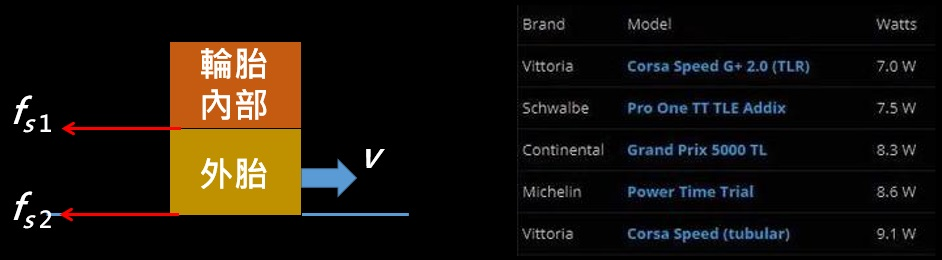
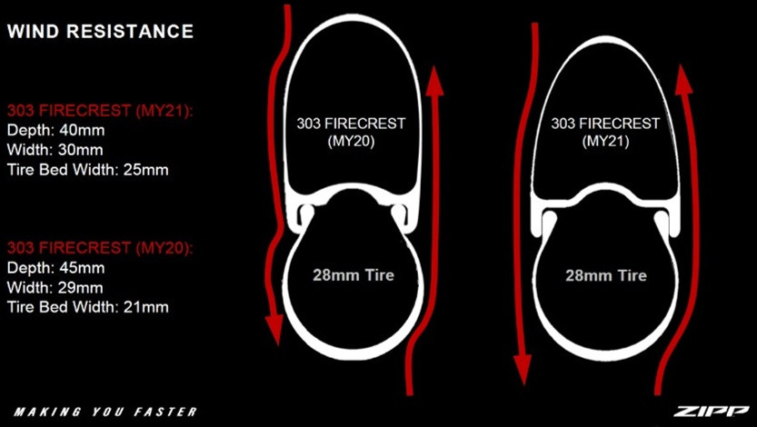

無內胎 開口胎 管胎怎麼選 胎壓越高可以越快嗎
公路車界最近也漸漸的開始用無內胎系統，在此之前就是有內胎以及管胎居多，管胎最讓人驚豔的就是它的重量，重量也有可以兩抵一條有內胎，但缺點就是貴 而且管胎輪組也跟有內胎不同，所以通常都會出兩種外胎所使用的輪組。而公路車也開始使用無內胎統後，最有名的就是環法 EF 車隊在 ，環哥倫比亞的 TTT 大勝第二名 45 秒，以及 Tony Martin 在 2016 拿下世錦賽 ITT 軍。當然能夠獲勝不是只有無內胎的功勞，但畢竟拿到冠軍後大家就會去看哪裡不一樣，當然現在環法也越來越多車隊在用無內， 2023 年至少有 AG2R、BORA、Jayco、EF 四隊會使用無內胎系統。
##一、三種外胎的介紹
那麼無內胎與管胎的差異與優缺點是什麼呢，管胎是直接黏在輪框上面所以框體會較輕，而外胎也可以做到非常輕，對於喜歡輕量的車手們是很好的選擇，但是缺點就是貴，外胎價錢通常較無內胎高。而無內胎系統可以當作是不使用內胎，當然框體相較於有內胎是有點不同，因為少了內胎所以滾阻也比較低，第一次安裝就比較麻煩 但我都請車店裝，不過爆胎後的解法就是裝有內胎進去就，但目前沒爆過胎 所以無法分享換胎是否麻煩。
表一：管胎、無內胎與開口胎的比較
| 管胎(tubular) | 無內胎(tubeless) | 有內胎(clincher, open) | |
|---|---|---|---|
| 優點 | 輕 | 滾阻低 | 方便、便宜 |
| 缺點 | 貴 | 第一次安裝麻煩 | 較重 |
如果外胎紋路一樣，為什麼無內胎滾阻會比較低呢，要讓物體從靜止到運動就要施力，外胎就是藉由與地面的靜摩擦力做運動，如果胎內部還有其他物體的話，因為要一起轉動 所以也受到另一個靜摩擦力作用，無內胎就是少了一個靜摩擦力所以滾阻很低。雖然胎也沒內胎，但是因為是黏在輪框上，所以會有較大的摩擦力 就 GCN 的測試結果，管胎的滾阻甚至會大於一般的有內胎，而另一網站的測試也是如此，可以看到相同品牌的外胎 滾阻也是無內胎較低。
fs 1: 管胎 (30 W) > 有內胎 (28 W) > 無內胎 (25 W)
|  |
|---|
| 圖一：外胎的摩擦力力圖與一些外胎的滾阻[1] |
##二、不同框寬與胎壓的滾阻
而管胎的胎壓通常可以很高，但無內胎就不建議太高，有人覺得胎壓越高滾阻會越低，所以我們來看一下相同寬度，不同氣壓的滾，這邊數據來源雖然是放美騎網，不過實際上應該也是來自於剛剛那個網站。這邊是用同一個寬度的外胎去裝不同的框寬，然後去看看在不同的胎壓下滾阻如何，從這邊可以看到在相同的框胎寬比條件下，胎壓越高確實滾阻也會越低，而最低的就是在胎框寬比為 1 且胎壓最高的條件下。
表二：不同框胎比的滾阻[2]
| 框寬 | 18C | 22C | 26C |
|---|---|---|---|
| 框胎寬比 | 72% | 88% | 104% |
| 滾阻 (120 psi) W | 8.5 | 8.6 | 8.1 |
| 滾阻 (100 psi) W | 9.1 | 9.1 | 8.9 |
| 滾阻 ( 80 psi) W | 10.2 | 10.1 | 9.7 |
| 滾阻 ( 60 psi) W | 11.9 | 11.7 | 11.1 |
雖然外胎寬度相同 但是在不同的框寬下，能夠打進去的胎壓也不同，所以這邊就去根據寬框比例調整胎壓，可以看到根據寬框去調後滾阻也改變了，變大與變小都有 所以寬框也會影響到滾阻，所以要根據所選的寬框去調整胎壓才有最低的滾阻，當然對於固定的框胎寬比，胎壓越高滾阻越小。
表二：不同框胎比調整胎壓後的滾阻[2]
| 框寬 | 18C | 22C | 26C |
|---|---|---|---|
| 框胎寬比 | 72% | 88% | 104% |
| 127, 120, 113 psi W | 8.3 | 8.6 | 8.3 |
| 106, 100, 94 psi W | 8.9 | 9.1 | 9.0 |
| 85, 80, 75 psi W | 9.9 | 10.1 | 10.0 |
| 64, 60, 57 psi W | 11.5 | 11.7 | 11.5 |
 |
|---|
| 註冊並訂閱網站使用表現預估功能 |
那為什麼胎壓越高滾阻會越低呢？假設輪胎是順時針滾動如右圖所示，因為輪胎與地面有摩擦力且輪胎會形變，所以在觸地處的實際接觸面積就為越大，雖然在中學階段老師都會說摩擦力與接觸面積無關，但就實驗結果與現實狀況來看，胎壓越低，接觸地面就越多，滾阻也越大沒錯，不過實際上應該是要看微觀的接觸面積才對。
 |
|---|
| 圖二：外胎滾阻的原因[3] |
所以我們已經知道胎壓越高滾阻越低，那為什麼無內胎反而不推薦太高的胎壓呢，原因是胎壓越高騎起來就越硬，所以如果路面越不平整的話跳動會越多，就會造成騎乘的不舒適感，時間一拉長完賽時間就不一定比較短。像 ZIPP 就有拍影片說明這件事情，畢竟自行車公路賽通常都兩三小時起跳，像巴黎盧貝或是有石板路的賽段，就會從舒適度與滾阻之間去做取捨，所以有些人也會刻意去避開前方的減速條。
當然寬框與寬胎除了重量上較重外，對於空氣力學大家也覺得可能會比較大，畢竟迎風面積也變大了 所以直覺上風阻就較大，但是因為打起來的形狀不同，所以輪框的廠商也會去針對這點做優化，當然就連車價也會有些微的不同，而且風阻主要是看空氣能否順順流過去，所以雖然寬胎的迎風面積比較大，但是最終的結果不一定會有比較大的風阻。
|  |
|---|
| 圖三：寬胎的風阻[3] |
三、爬坡用哪個比較快
最後又到了算用哪種胎會比較快的時間，畢竟大家覺得爬坡就是重量輕優先，那麼就來看看西進武嶺用哪個會比較快，這邊假設不同的地方只有輪框與外胎系統，也就是管胎用管胎框 無內胎用無內胎框，然後都是用同一品牌來減少變數，所以這樣假設之後變數就只剩下下面兩個，以無內胎為基準，管胎組合輕 300 g 但滾阻較大。 這兩張圖分別是重量 75 kg 不同均瓦，以及均瓦 180 W 不同重量去做計算，是用無內胎的時間減去管胎的時間，如果是負的就表示無內胎比較快，所以如果測出來的滾阻真的如 GCN 所說的，雖然無內胎比較輕 但是滾阻方面多無內胎太多，所以在一般市民阻的體重與瓦數範圍內，無內胎的時間都會比管胎還要少。可以看到如果總重量越重，無內胎的時間也快越多，因為滾阻會與重量有關，越重滾阻就越大。
 |
|---|
| 圖四：管胎與無內胎爬武嶺的比現 |
無內胎系統最近才在公路車界有較多的使用，當然管胎也是有自己的偏好使用者，畢竟重量很容易可以測量到的，所以喜歡重量輕的就會偏好管胎，至於慣性的問題可以參考頻道中。關於輪組版高與重量選擇的影片，不同的胎框寬比會有不同的滾阻，比例大約是 1:1 時會有最小的滾阻，在我們的使用範圍內 胎壓越高滾阻確實越低，但是因為胎壓越高來自路面的震動也越直接，所以綜合來看不一定能最短時間完賽，而無內胎因為少了內胎所以滾阻會很低，所以越重的人使用無內胎滾阻也會越低。最後將所有情況考慮進去爬坡路段，無內胎的優勢也是非常大，我自己也是都只使用無內胎系統，使用起來整體來說也滿不錯的。
參考資料
[1] https://www.bicyclerollingresistance.com/
[2] https://www.biketo.com/product/47589.html?all=1
[3] https://zhuanlan.zhihu.com/p/131597440 \